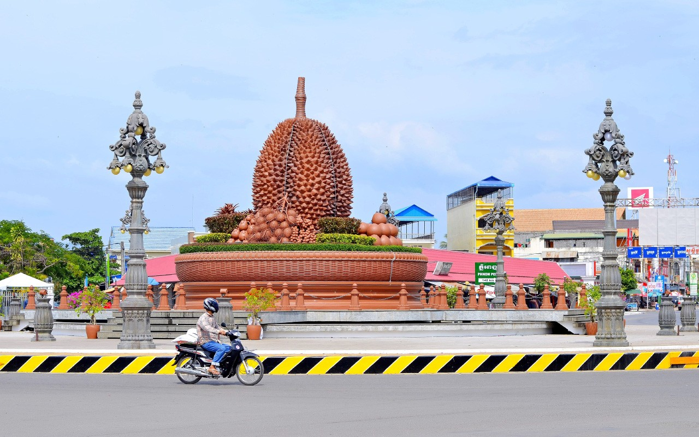

The Bokor National Park is popular for its cool mountain climate and remains a year-round favourite amongst locals and foreigners alike. The scenery from the top is captivating especially in the morning hours when one can literally touch the clouds and take in fresh mountain air. With the development of a new resort type 5-star hotel on the summit, the roads have all been newly paved.

Other attractions include the Popokvil Waterfall where the water charges
incessantly to provide a pool at its base for a cool dip.
A short distance across the track, the Toek Chhou Rapids offers yet
another popular tourist attraction.
Kampot exudes a relaxed atmosphere; it possesses a quaint, welcoming small
town ambiance that is soothing to the soul.